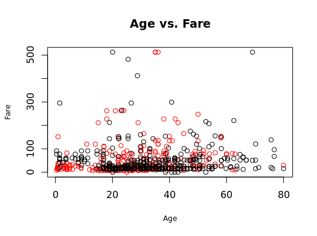
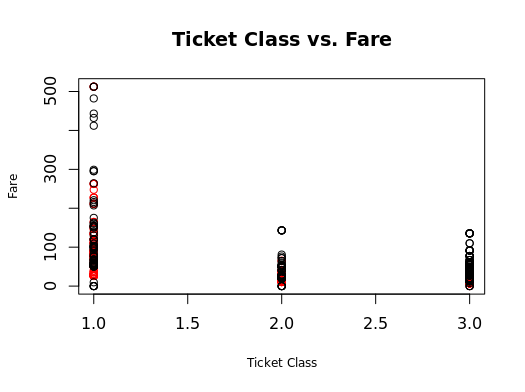
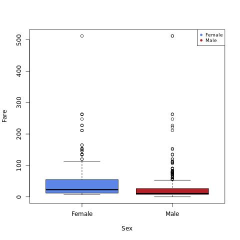

Project Summary
Titanic Passenger Survival
I explored records for 891 passengers in R, checked for missing values, and compared observed survival by ticket class and sex. Survival in the sample was about 63% in first class and 24% in third class. I fit logistic models, compared classifiers with caret, and submitted survival predictions to Kaggle, where the submission received a public score of 0.76555.
Skills and What I Learned
I learned to inspect missing values, distinguish descriptive survival rates from predictive performance, and interpret a public Kaggle score in the context of the evaluated sample.
Part 1 · Descriptive Analysis and Visualization
I used descriptive statistics and exploratory regressions to examine how age, ticket class, and sex relate to fare. The data review flagged missing age and cabin values, which matter when choosing variables and preparing data for prediction.
Download the R script, data, and charts (ZIP)
View the descriptive analysis code
library(readr)
boat <- read_csv("titanic.csv")
summary(boat)
head(boat)
tail(boat,10)
summary(boat$Fare)
mean(boat$Fare)
sd(boat$Fare)
var(boat$Fare)
#Scatterplot 1, Age vs. Fare
cor(boat$Age,boat$Fare)
aggregate(Age~Survived,boat,mean)
plot(boat$Age,boat$Fare)
plot(Fare~Age,data=boat)
plot(Fare~Age,data=boat,xlab="Age", ylab="Fare",main="boat")
plot(Fare~Age,data=boat,xlab="Age", ylab="Fare",main="Age vs. Fare",cex.lab=.75)
plot(Fare[which(boat$Survived==0)]~Age[which(boat$Survived==0)],data=boat,
xlab="Age", ylab="Fare",main="Age vs. Fare",
cex.lab=.75)
par(new=T)
plot(Fare[which(boat$Survived==1)]~Age[which(boat$Survived==1)],data=boat,
col="red",xlab="Age", ylab="Fare",main="Age vs. Fare",
cex.lab=.75)
plot(Fare[which(boat$Survived==1)]~Age[which(boat$Survived==1)],data=boat,
col="red",xlab="Age", ylab="Fare",main="Age vs. Fare",
cex.lab=.75)
par(new=T)
plot(Fare[which(boat$Survived==0)]~Age[which(boat$Survived==0)],data=boat,
xlab='', ylab='', axes=F,
cex.lab=.75)
abline(lm(boat$Fare~boat$Age), col="darkgreen")
#Scatterplot 2, Ticket Class vs. Fare
cor(boat$Pclass,boat$Fare)
aggregate(Survived~Pclass,boat,mean)
plot(boat$Pclass,boat$Fare)
plot(Fare~Pclass,data=boat)
plot(Fare~Pclass,data=boat,xlab="Ticket Class", ylab="Fare",main="Ticket Class vs. Fare")
plot(Fare~Pclass,data=boat,xlab="Ticket Class", ylab="Fare",main="Ticket Class vs. Fare",cex.lab=.75)
plot(Fare[which(boat$Survived==0)]~Pclass[which(boat$Survived==0)],data=boat,
xlab="Ticket Class", ylab="Fare",main="Ticket Class vs. Fare",
cex.lab=.75)
par(new=T)
plot(Fare[which(boat$Survived==1)]~Pclass[which(boat$Survived==1)],data=boat,
col="red",xlab="Ticket Class", ylab="Fare",main="Ticket Class vs. Fare",
cex.lab=.75)
plot(Fare[which(boat$Survived==1)]~Pclass[which(boat$Survived==1)],data=boat,
col="red",xlab="Ticket Class", ylab="Fare",main="Ticket Class vs. Fare",
cex.lab=.75)
par(new=T)
plot(Fare[which(boat$Survived==0)]~Pclass[which(boat$Survived==0)],data=boat,
xlab='', ylab='', axes=F,
cex.lab=.75)
abline(lm(boat$Fare~boat$Pclass), col="darkgreen")
#Boxplot 1, Sex vs. Fare
aggregate(Survived~Sex,boat,mean)
summary(boat$Fare)
boxplot(boat$Fare)
boxplot(boat$Fare~boat$Sex)
boxplot(boat$Fare~boat$Sex,xlab="Sex",ylab="Fare",main="Titanic",
cex.axis=0.75)
boxplot(Fare~Sex,data=boat,
col=(c("#5b85e7","#b32025")),
names=c("Female","Male"))
legend("topright",legend=c
("Female","Male"),pch=c(19,19),
col=(c("#5b85e7","#b32025")),cex=.75)
boatLM<-lm(boat$Fare~boat$Age)
summary(boatLM)
coef(boatLM)
summary(boatLM)$r.squared
boatLM2<-lm(boat$Fare~boat$Pclass)
summary(boatLM2)
coef(boatLM2)
summary(boatLM2)$r.squared
boatLM3<-lm(boat$Fare~boat$Sex)
summary(boatLM3)
coef(boatLM3)
summary(boatLM3)$r.squared
Observed Survival by Ticket Class
- 63.0%
- First class
- 47.3%
- Second class
- 24.2%
- Third class
The R output also showed observed survival rates of 74.2% for female passengers and 18.9% for male passengers. These differences identify candidate predictors for a model. They are descriptive rates from the sample.
Exploratory Visualizations



Part 2 · Logistic Regression and Kaggle
For the predictive stage, I submitted survival predictions to Kaggle. The submission recorded a public score of 0.76555 (about 76.6% accuracy on the public scoring subset).
The script starts with a sex-only logistic regression, checks missing ages and embarkation values, and fits a second model that adds ticket class, age, family counts, and fare. The accuracy calculation uses the training data. The draft export still uses the binary predictions from the sex-only baseline after computing the second model’s probabilities.
Download the regression scripts and data (ZIP)
View the logistic regression code
library(readr)
boat<- read_csv("train.csv")
boat$Survived<-as.factor(boat$Survived)
boatLR<-glm(Survived~Sex,family=binomial(),data=boat)
summary(boatLR)
#Checked missing values in age column
sum(is.na(boat$Age))
boat$AgeAVG<-boat$Age
boat$AgeAVG[is.na(boat$AgeAVG)]<-mean(boat$AgeAVG,na.rm=TRUE)
#Replaced missing embarked values with the most frequent category
sum(is.na(boat$Embarked))
table(boat$Embarked)
boat<-within(boat,Embarked[is.na(Embarked)]<-"S")
boattest<- read_csv("test.csv")
boattest$survive.prod<-predict(boatLR,boattest,type="response")
boattest$survive<-round(boattest$survive.prod)
View(boattest)
sum(is.na(boattest$Age))
boattest$AgeAVG<-boattest$Age
boattest$AgeAVG[is.na(boattest$AgeAVG)]<-mean(boattest$AgeAVG,na.rm=TRUE)
sum(is.na(boattest$Embarked))
table(boattest$Embarked)
boattest<-within(boattest,Embarked[is.na(Embarked)]<-"S")
#Added logistic regression model
boatLR2<-glm(Survived~Sex+Pclass+AgeAVG+SibSp+Parch+Fare,family=binomial(),data=boat)
summary(boatLR2)
boat.prob<-predict(boatLR2,boat,type="response")
table(boat$Survived,boat.prob>.5)
CF<-table(boat$Survived,boat.prob>.5)
#Checked for accuracy
Accuracy<-(CF[2,2]+CF[1,1])/nrow(boat)
Accuracy
boattest$survive.prod<-predict(boatLR2,boattest,type="response")
submission <- c()
submission$PassengerID <-boattest$PassengerId
submission$Survived <-boattest$survive
write.csv(submission, file = "submission.csv")
Part 3 · Compare Models with caret
I used an 80/20 split to evaluate k-nearest neighbors and a classification tree on held-out labels. The tree uses 10-fold cross-validation and Kappa for model selection. The included Kaggle submission uses predictions from the logistic regression in the comparison script.
Download the caret scripts, data, and submission CSV (ZIP)
View the caret model comparison code
library(readr)
library(caTools)
library(FNN)
library(tree)
library(kernlab)
library(neuralnet)
library(caret)
boat<- read_csv("train.csv")
boat$Survived<-as.factor(boat$Survived)
head(boat)
summary(boat)
View(boat)
#for checking the variable Age for missing variables and replacing them with the mean Age.
boat<-within(boat,Age[is.na(Age)]<-mean(Age,na.rm=TRUE))
boattest<- read_csv("test.csv")
View(boattest)
boattest<-within(boattest,Age[is.na(Age)]<-mean(Age,na.rm=TRUE))
#set random seed.
set.seed(123)
#use the sample() function to split the data into 80% train, 20% test.
sample<- sample.split(boat$Survived, SplitRatio = .80)
train<- subset(boat, sample == TRUE)
test<- subset(boat, sample == FALSE)
#add logistic regression model.
boatLR<-glm(Survived~Sex+Age+SibSp+Parch,family=binomial(),data=boat)
summary(boatLR)
#use the train() function in caret to tune k-nearest neighbors.
Model<-train(Survived~Sex+Age+SibSp+Parch,data = train, method = "knn")
Model
Model$finalModel
#calculate RMSE - using predict() and postResample().
test_PR<-predict(Model,test)
postResample(pred = test_PR, obs = test$Survived)
#change control options bootstrapping to cross-validation.
trControlOptions<-trainControl(method="cv",number=10,selectionFunction ="best")
#call regression tree and optimize over in kappa.
Model<-train(Survived~Sex+Age+SibSp+Parch,data=train,method="rpart",trControl=trControlOptions,metric="Kappa")
table(predict(Model,boat),boat$Survived)
Model$finalModel
#calculate RMSE - using predict() and postResample().
test_PR<-predict(Model,test)
postResample(pred = test_PR, obs = test$Survived)
boattest$survive.prod<-predict(boatLR,boattest,type="response")
boattest$survive<-round(boattest$survive.prod)
View(boattest)
submission <- c()
submission$PassengerID <-boattest$PassengerId
submission$Survived <-boattest$survive
write.csv(submission, file = "submission.csv")